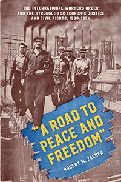

<body bgcolor="#FFFFFF" text="#000000" link="#0000FF" vlink="#CC0000" alink="#CC0000"><center><hr width="350" size="1" align="center" noshade>The history of the International Workers Order's struggle to enact a social-democratic, racially egalitarian vision for America<hr width="350" size="1" align="center" noshade><p><a href="https://cdcshoppingcart.uchicago.edu/Cart/ChicagoBook.aspx?ISBN=&&PRESS=temple" target="_top">Buy this book!</a> | <a href="https://cdcshoppingcart.uchicago.edu/Cart/Cart.aspx?PRESS=temple" target="_top">View Cart</a> | <a href="https://cdcshoppingcart.uchicago.edu/Cart/Cart.aspx?PRESS=temple" target="_top">Check Out</a></p><p></p></center><!--none//--><h1 class = "booktitle">"A Road to Peace and Freedom"</h1> <h1 class = "subtitle">The International Workers Order and the Struggle for Economic Justice and Civil Rights, 1930-1954</h1>
<h3>Robert M. Zecker </h3>
paper: $34.95, Jan 18<BR>EAN:&nbsp;978-1-4399-1516-5<BR><font color=#990033>Not Yet Published Preorder</FONT><font size=-7><br>&nbsp;</font></p><p class="info">cloth: $99.50, <BR>EAN:&nbsp;978-1-4399-1515-8<BR><font color=#990033>Not Yet Published Preorder</FONT><font size=-7><br>&nbsp;</font></p><p class="info"></p></td></tr></table>
<BR> <p class="info">430 pp<BR> 6 x 9<BR> 14 halftones <p class="info"><font size=-7>&nbsp;</font></p><p class="info">
</P><BLOCKQUOTE></BLOCKQUOTE>
<p>The International Workers Order was an American consortium of ethnic mutual self-insurance societies that advocated for unemployment insurance, Social Security and vibrant industrial unions. This interracial leftist organization guaranteed the healthcare of its 180,000 white, black, Hispanic and Arabic working-class members. But what accounted for the popularity-and eventual notoriety-of this Order?<br/><br/>Mining extensive primary sources, Robert Zecker gives voice to the workers in <i>"</i><i>A Road to Peace and Freedom."</i> He describes the group's economic goals, commitment to racial justice, and activism, from lobbying to end segregation and lynching in America to defeating fascism abroad. Zecker also illustrates the panoply of entertainment, sports, and educational activities designed to cultivate the minds and bodies of members.<br/><br/>However, the IWO was led by Communists, and the Order was targeted for red-baiting during the Cold War, subject to government surveillance, and ultimately "liquidated." Zecker explains how the dismantling of the IWO and the general suppression of left-wing dissenting views on economic egalitarianism and racial equality had deleterious effects for the entire country. Moreover, Zecker shows why the sobering lesson of the IWO remains prescient today.<br>
<P CLASS="top"><A HREF="#top">BACK TO TOP</A></P>&nbsp;
<BR>&nbsp;
&nbsp;<P>
</P><BR>&nbsp;
<H2 class="inpageheading"><A NAME="author bio"></a>About the Author(s)</H2><p><b>Robert M. Zecker</b> is Associate Professor in the Department of History at Saint Francis Xavier University. He is the author of <i>Race and America's Immigrant Press: How the Slovaks Were Taught to Think Like White People.</i><br>
<P CLASS="top"><A HREF="#top">BACK TO TOP</A></P>
<p><h2 class="inpageheading"><a name="subjects"></a>Subject Categories</h2> <p><a href="http://www.temple.edu/tempress/history.html" target="_top">History</a> <br><a href="http://www.temple.edu/tempress/labor.html" target="_top">Labor Studies and Work</a> <br><a href="http://www.temple.edu/tempress/immigration.html" target="_top">Immigration</a> <br><a href="http://www.temple.edu/tempress/social.html" target="_top">Community Organizing and Social Movements</a> <br><a href="" target="_top"></a> </p>
</p>
<P>
</P>
<p align="center"><a href="https://cdcshoppingcart.uchicago.edu/Cart/ChicagoBook.aspx?ISBN=&&PRESS=temple" target="_top">Buy this book!</a> | <a href="https://cdcshoppingcart.uchicago.edu/Cart/Cart.aspx?PRESS=temple" target="_top">View Cart</a> | <a href="https://cdcshoppingcart.uchicago.edu/Cart/Cart.aspx?PRESS=temple" target="_top">Check Out</a></p><p><font face="Arial" size="1"><a href="copyright.html" onMouseOver="window.status='Web Copyright Policy';return true;" onMouseOut="window.status=''" title="Web Copyright Policy">&copy;</a> 2018 <a href="http://www.temple.edu" target="new" onMouseOver="window.status='Link to Temple University home page';return true;" onMouseOut="window.status=''" title="Link to Temple University home page">Temple University</a>. All Rights Reserved. http://www.temple.edu/tempress/titles/2462_reg.html</font></p>